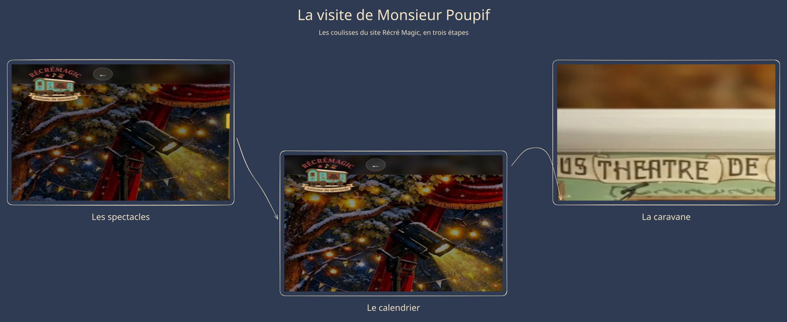

01 / La carte
Le dessin n'a pas pu se charger. Rechargez la page pour réessayer.
Récrémagic · Petit essai de machinerie
Tout est sur la carte. Entrons dans la caravane, à droite.

Le dessin n'a pas pu se charger. Rechargez la page pour réessayer.